in order of appeareance
Thanks to our partners, friends, family, and colleagues,
for their support and patience during the months of preparation.
Thanks to Emmylou, Josephine, and Martine
for giving Erik a week off from household duties. 💖
Thanks to the entire Rust community,
for making this event worth organizing.
Credits roll made in Vim by Mara Bos
RustWeek 2026 is proudly organized by

in collaboration with

At the Hackathon, Unconference, or Rust All Hands!